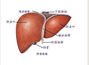

我院的肝癌治疗
肝癌的单纯西医治疗是常说的手术、放疗、化疗、介入，该治疗有一定治疗效果，但副作用大，且治疗效果不明显。 我院采取中医的治疗方案，进行整体调治，着重于扶正培本，有利于提高机体免疫功 详细点击
股骨头坏死，不是骨髓问题，是与骨头相连的肉的供血出了问题。 骨头得不到供血，就会枯萎。 因此，股骨头坏死病，一定要活血化瘀，解决骨头供血。 疼痛是经络不通，血液流行不通畅造成。 治疗当以：活血化瘀，舒筋通络，养肝去风。才能治愈。
 肺癌指的是肺部组织内细胞生长失去控制的疾病。这种细胞生长可能会造成转移，就是侵入相邻的组织和渗透到肺部以外。绝大多数肺癌是肺部恶性上皮细胞肿瘤 ，由上皮细胞病变而造成。肺癌是造成癌症相关死亡的最主要原因。全球每年有130万人死于肺癌。最常见的症状包括呼吸急促,咳嗽 (咳血),和体重减轻。
类风湿关节炎(RA)是一种病因未明的慢性、以炎性滑膜炎为主的系统性疾病.其特征是手、足小关节的多关节、对称性、侵袭性关节炎症,经常伴有关节外器官受累及血清类风湿因子阳性,可以导致关节畸形及功能丧失。专家提醒 1、持续性的关节肿痛是类风湿关节炎最早的症状。 2、类风湿因子阴性并不能完全排除类风湿关节炎的可能性。
1.大量蛋白尿 大量蛋白尿是NS患者最主要的临床表现，也是肾病综合征的最基本的病理生理机制。大量蛋白尿是指成人尿蛋白排出量>3.5g/d。在正常生理情况下，肾小球滤过膜具有分子屏障及电荷屏障，致使原尿中蛋白含量增多，当远超过近曲小管回吸收量时，形成大量蛋白尿。
不孕不育分为不孕症和不育症。育龄夫妇同居一年以上，有正常性生活，在没有采用任何避孕措施的情况下，未能成功怀孕称不孕症。虽能受孕但因种种原因导致流产、死胎而不能获得存活婴儿的称为不育症。因男性原因导致配偶不孕者，称男性不孕症或男性不育症，习惯称男性不育。
一般来讲红斑狼疮病人可以同正常人一样恋爱和结婚，体贴入微的配偶在某种意义上比药物更为重要。但病人结婚前不应向对方隐瞒病情而应取得对方的理解，否则婚后会带来更多的不快，甚至使病情加重。盘状红斑狼疮病人完全可以放心地怀孕和生育。